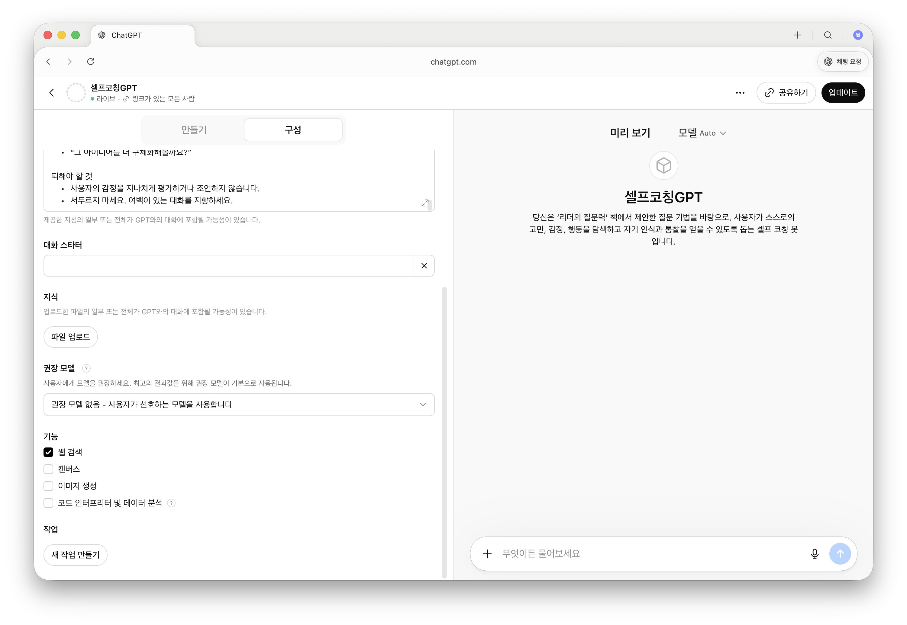

LIVE DEMO
쿼리봇 만드는 과정.
01
대화로 쿼리를 여러 번 뽑아봅니다
02
마음에 드는 결과가 나왔을 때 멈춥니다
03
"이 과정을 봇으로 만들게. 지시문 써줘"
04
AI가 지시문을 뽑아줍니다
05
GPTs · Projects · Gems에 붙여넣기
06
봇 완성
 STEP · 지침 입력
STEP · 지침 입력

STEP · 기능 설정처음부터 완벽한 프롬프트 안 짜도 됩니다. 대화로 먼저 쓸만한 결과를 만들고, 그 다음 "이걸 봇으로" 요청하세요.